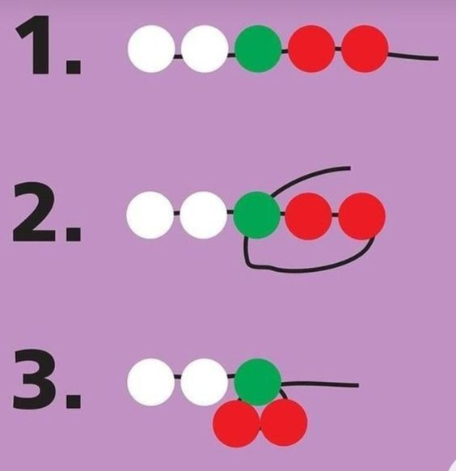

Crea y personaliza lindos collares de cereza
Materiales necesarios:
- Abalorios rojos, verdes y blancos
- Broche de cierre
- Hilo elástico
- Un escalachin
- Tapa nudos
- Tijeras
- Alicate
Paso 1: Preparar el Material
Corta alrededor de 45 cm de hilo. Este largo es para hacerlo tipo gargantilla.

Paso 2: Hacer el nudo
Antes de empezar a darle forma a nuestro collar, debemos hacer un nudo, asegurarlo con el escalachín, aplastándolo con un alicate, tapar el nudo y escalachín utilizando el tapanudos y por último, cerrar la argolla donde irá el broche de cierre.

Paso 3: Ensartar los Abalorios
Debes ir colocando los abalorios en el hilo siguiendo el patrón de la imagen. Pon abalorios blancos según la distancia que quieras entre cada cerecita.
Paso 4: Terminar el collar
Por último, terminamos el collar con un nudo y hacemos similiar al primer paso, solo que esta vez no pondremos un broche de cierre, solo una o más argollas.